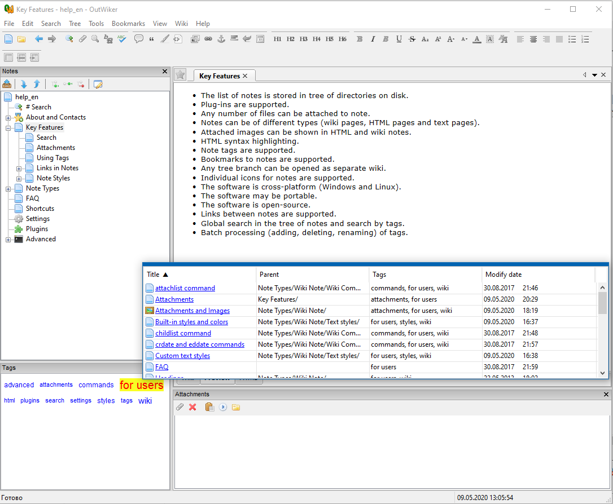
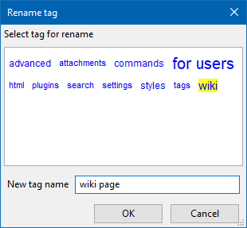

Adding tags to the notes
Tags can be used to find specific note(s). Any number of tags can be associated with a note.
There are several ways to add tags to notes. Sometimes it is convenient to add tags when creating a note. There is special field "Tags" on the "Create page" dialogue. A few new tags can be entered this way, tags should be separated with commas.
To make it easier to enter existing tags, one can use the tag cloud located below the "Tags" field. When one clicks on the tag, it is appears in the input field. The menu "Tree/Page Properties..." can be used to add tags to the existing pages (it calls the dialogue "Edit page properties...").
Alternatively, tags can be added using the "Tags" pane of the main window (if the pane is hidden, it can be opened using the menu "View/Tags").
To associate tag listed on the pane one needs to middle-click the tag. If the tag has already been associated with the note (those tags are highlighted with yellow colour) middle-clicking has the opposite effect, i. e. it removes (un-associates) the tag from the note.
Tags associated with greater number of notes (more popular tags) appear in larger font size on the "Tags" pane. The lesser used tags appear smaller.
Left-clicking on a tag results in popping up a list of pages which the tag is associated with.

Batch operations with tags
Batch adding and removing tags
OutWiker supports adding and remove tags for all notes belonging to a branch of the tree. Steps to follow:
1. Select the root note for the branch (it works for entire tree as well if the tree root note is selected).
2. Go to "Tools - Add Tags to Branch...". The following dialogue pops up:
3. Select the tags to be added to the notes (separated by commas). One can either select existing tags or enter new ones.
4. Click "OK".
It results in associating all the selected tags with every note of the branch.
To remove a tag from a branch or the entire tree, one should follow the same steps, but go to "Tools - Remove the labels from the branches..." at the step 2.
Tags rename
OutWiker supports renaming of existing tags. Steps to follow:
1. Go to "Tools - Rename Tag...". The following dialogue pops up:

2. Click the tag to rename (the selected tag appears highlighted with yellow colour), and type a new tag name in the lower text box.
3. Click "OK".
The tage name is replaced for all notes, it has previously associated with.
{kind=link}
{kind=link}
{kind=link}